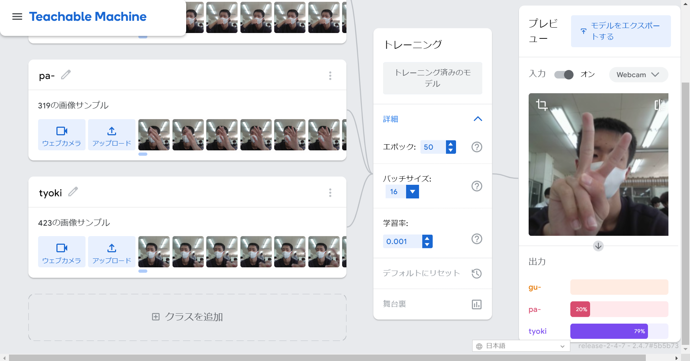
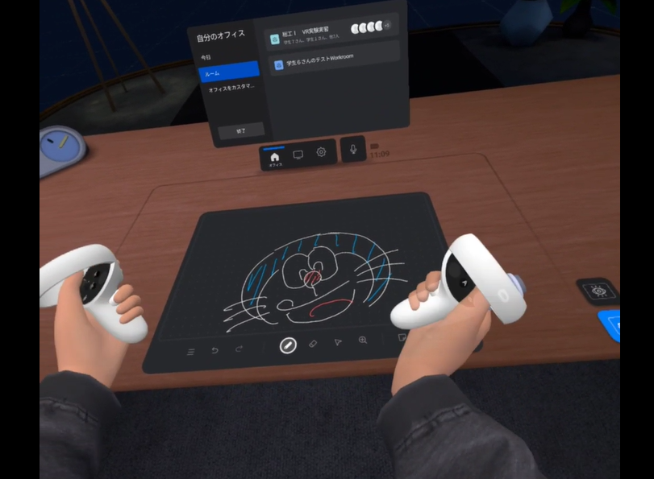

第2週目
2-1 １週目のレポートをHTMLで作る
１週目のレポート
1.内容
レポートをhtml化した
2.感想
簡単だったけど、あまり使うことはなさそうだった。
2-2 機械学習体験

1.内容
AIに手の形を学習させ、グーチョキパーを判断できるようにした。
2.感想
思っていたより簡単にAIが使えて、学習させることができた。150枚程度しかサンプルを送信していなかったが、ある程度の精度であっていた。こんなに簡単にAIが使えるようになったのかとすこしおどろいた。
2-3 VR（バーチャルリアリティー：Virtual Reality）会議室の体験

1.内容
MetaQuest2を使用して、バーチャル空間を体験した。
2.感想
MetaQuestを使っていて、とても楽しかった。VRを使えば、オンライン会議などもやりやすくなるんじゃないかと思っていたが、細かい手の動きがわからなかったり、表情も見えないので、すこし使いづらいかなと感じた。